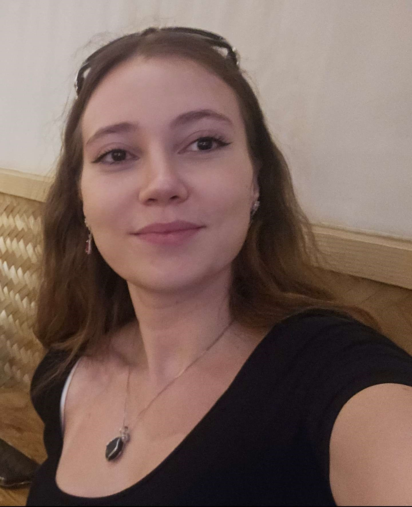
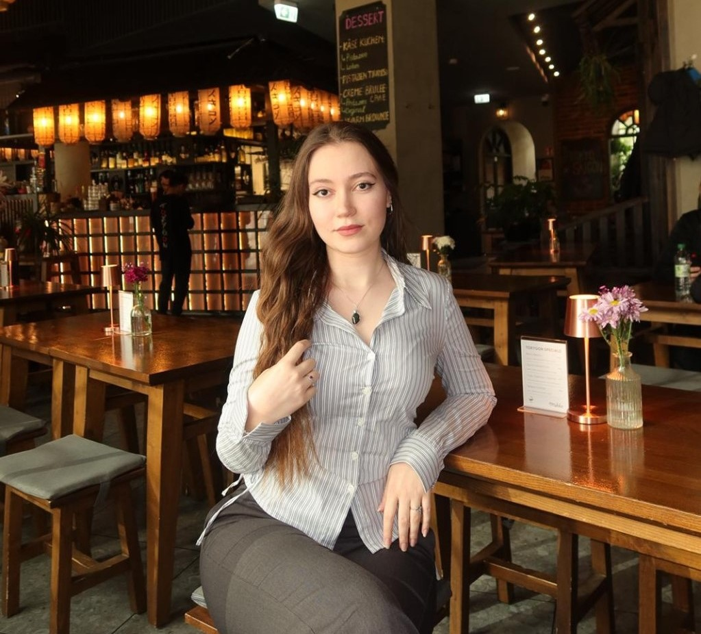
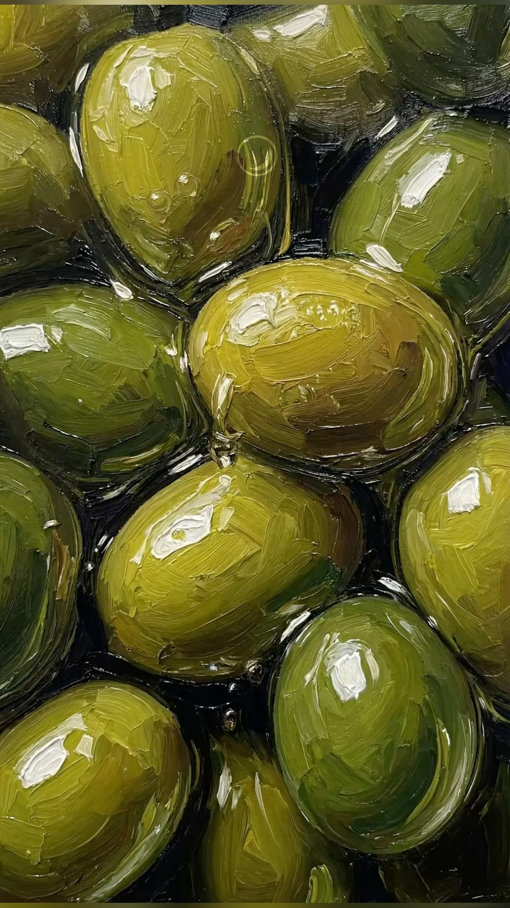

Verkettete Liste
Implementierung einer verketteten Liste mit C++. Das Projekt umfasst das Einfügen, Löschen und Durchlaufen von Elementen.
C++ · DatenstrukturenInformatikstudentin | Softwareentwicklung

Engagierte Informatikstudentin im 5. Semester an der Frankfurt University of Applied Sciences mit Kenntnissen in Java, C, C++, SQL, R sowie Linux und Windows. Zusätzliche praktische Erfahrung im Kundenservice, in der Betreuung und Veranstaltungsorganisation. Zuverlässig, strukturiert und kommunikativ. Besonders interessiert an IT-nahen Tätigkeiten, Organisation und kreativen Aufgaben. IT-Kenntnisse durch eigenständiges Engagement, eigene Projekte, eine persönliche Portfolio-Website und universitäre Projekte im Bereich Softwareentwicklung vertieft. Auf der Suche nach einer Werkstudentenstelle im IT-Bereich, um Kenntnisse anzuwenden und weiterzuentwickeln.

Technology meets creativity
Implementierung einer verketteten Liste mit C++. Das Projekt umfasst das Einfügen, Löschen und Durchlaufen von Elementen.
C++ · DatenstrukturenEntwicklung eines interaktiven Konsolenspiels in C mit Zufallszahlen, Benutzereingaben und Hinweisen.
C · Programmierlogik · BenutzerinteraktionAnalyse und Visualisierung statistischer Datensätze mit RStudio. Erstellung von Diagrammen zur Darstellung von Zusammenhängen und Entwicklungen.
R · RStudio · StatistikArbeiten mit relationalen Datenbanken. Erstellung von SQL-Abfragen zur Filterung, Sortierung und Verknüpfung von Daten aus verschiedenen Tabellen.
SQL · DatenbankenBeratung und Unterstützung von Erstsemesterstudierenden bei der Orientierung im Hochschulalltag. Organisatorische Aufgaben, Ausgabe von Studienchips sowie Bearbeitung studienbezogener Informationen.
Betreuung und Beaufsichtigung von Grundschulkindern. Planung und Durchführung von Spiel- und Freizeitaktivitäten. Unterstützung bei den Hausaufgaben und Zusammenarbeit mit dem Betreuungsteam.
Kundenbetreuung und Service. Bearbeitung von Kundenanliegen und Unterstützung bei Serviceanfragen.
Unterstützung bei der Veranstaltungsorganisation und Besucherkoordination.
Unterstützung bei der Betreuung von Kindern.
Tätigkeiten im Servicebereich und an der Kasse.

Neugierig bleiben, neue Wege entdecken und aus jeder Erfahrung etwas mitnehmen.
ASYA / 2026Frankfurt University of Applied Sciences
Max-Eyth-Schule Dreieich
Leistungskurse: Mathematik & Biotechnologie
Ricarda-Huch-Schule Dreieich-Sprendlingen
Du möchtest mit mir zusammenarbeiten oder hast Fragen zu meinen Projekten? Ich freue mich über deine Nachricht.
asy.klyi@gmail.com ↗ ↓ Lebenslauf herunterladen